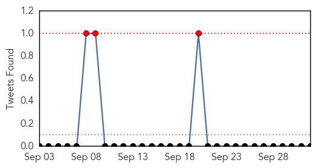

Dengue Fever
30-Day Web Trend
17 alerts, 5 warnings

30-Day Twitter Trend
0 alerts, 0 warnings

Article Locations

Article Confidences

Top Articles:
- 0.998
- Dengue patients in Vietnam overwhelm hospital for tropical diseases
- 0.990
- Dengue cases hit 9-yr high
- 0.988
- Dengue scare continues at Kotwa village - India
- 0.972
- Union Health Ministry takes stock of situation
- 0.970
- Dengue death is official only if patients die in select hospitals - India
- 0.964
- Dengue outbreak: Number of cases falling; barring rain, surge unlikely, say officials
- 0.957
- Dengue rings alarm bells in Rawalpindi
- 0.882
- Malaria scare hits International City in Dubai
- 0.841
- Chief secretary to supervise drive against dengue - Pakistan
- 0.827
- After the elder one, dengue takes life of 3-year-old brother
- 0.817
- Dengue breeding notices to Sanskriti, AIIMS
- 0.790
- Dengue crisis in Delhi: Notices to doctors
- 0.786
- Delhi government doctors get notices for dereliction of duty
- 0.774
- Government issues notice to doctors
- 0.650
- No proof that haze reduces dengue cases, Medical studies news, Health News, AsiaOne YourHealth
Top Tweets:
-
No tweets found for Oct 02, 2015
West Nile Virus
30-Day Web Trend
0 alerts, 0 warnings
30-Day Twitter Trend
0 alerts, 0 warnings

Article Locations
Article Confidences

Top Articles:
- 0.993
- Dead birds test positive for West Nile Virus in Oneida County
- 0.988
- Suisun City adult has West Nile virus
- 0.982
- Four birds in Jackson County found to be infected with West Nile virus
- 0.870
- Will County reports big increase in West Nile virus for 2015
- 0.762
- WAFB 9 News Baton Rouge, Louisiana News, Weather, Sports
Top Tweets:
- 0.607
- Flavivirus news: Health officials: Suisun City adult has West Nile virus - Fairfield Daily Repu... http://t.co/WCjXZGr4Cm pathogenposse